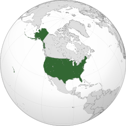
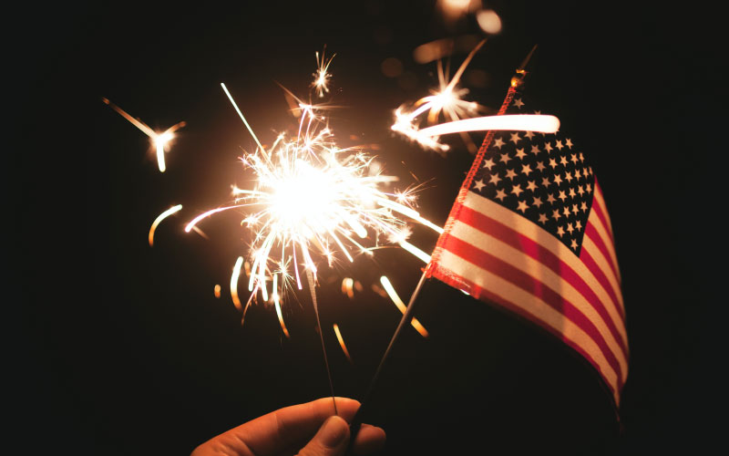
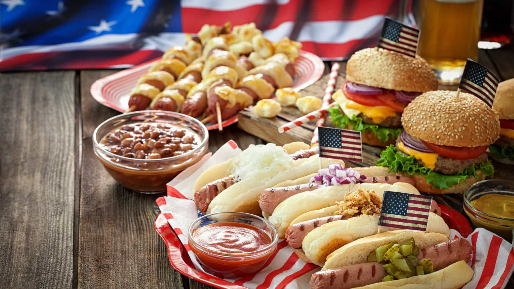

A maior parte do país situa-se na região central da América do Norte
A cultura americana é diversa e multicultural, resultado da mistura de várias etnias e influências, principalmente europeias, africanas, asiáticas e latinas.
- Valorizam o individualismo, a liberdade e o empreendedorismo.
- A cultura americana influencia o mundo inteiro através do cinema de Hollywood, da música (rock, pop, hip hop, country) e da tecnologia.
- São grandes consumidores de esportes como futebol americano, beisebol, basquete e hóquei no gelo.
- Festividades importantes incluem: Dia da Independência (4 de julho), Thanksgiving (Dia de Ação de Graças) e o Halloween.
A culinária americana é marcada por pratos rápidos e influências internacionais:
Hambúrguer e batata frita, Hot dog (cachorro-quente), Mac and cheese, Apple pie (torta de maçã).
Panquecas com xarope de bordo (Maple Syrup).
Os Estados Unidos têm cerca de 335 milhões de habitantes (dados de 2024).
É o terceiro país mais populoso do mundo, depois da China e da Índia.
A capital é Washington, D.C., mas a maior cidade é Nova York.
É um país com grande diversidade étnica e cultural, com imigrantes de todo o mundo.
Hollywood é o maior centro da indústria cinematográfica global.
Os EUA têm 50 estados e um território federal.
O país já enviou astronautas à Lua a NASA é referência mundial em exploração espacial.
A Estátua da Liberdade, em Nova York, foi um presente da França e é um símbolo de liberdade.